Yen Tran
Product manager
A builder who untangles problems that don't come with clear answers — product work shaped by user research, hard trade-offs, and what actually made it to production.
Approvy
Lead qualification chatbot
Personal expense app
As a Product Manager at a relationship well-being startup, the brief was to investigate emerging user needs, validate a new problem space, and shape a solution concept that could inform future product direction — write a PRD covering problem statement, user research artifacts, and a described solution with workflow, ORD, activity diagram, wireframes, and user stories. Timeline: 3 weeks. I led a cross-functional team of five and owned the product from problem definition through solution delivery.
Approvy turns meeting decisions into clear, time-bound approval requests so teams can stay aligned, avoid misunderstandings, and move projects forward smoothly. It captures decisions in a simple project-scoped log so context stays with the request, notifies the right stakeholders with a clear deadline and one-click approve/reject actions, and tracks outcomes and timestamps centrally to remove ambiguity and surface bottlenecks.
Teams spend significant time coordinating across meetings, email, and documents. Critical decisions often stall or get misinterpreted because there's no lightweight, standardized way to request and record approvals.
Primary: product managers and project managers who own decisions and need approvals to move work forward. Secondary: approvers — managers, leads, and cross-functional stakeholders — who need quick context and a low-friction way to approve.
I applied the Double Diamond framework to structure discovery and early solution exploration: discover (problem — diverge), define (problem — converge), develop (solution — diverge), deliver (solution — converge). The split was roughly 70% problem space — research and converge via user interviews, JTBDs, a job map, and a clear problem statement — and 30% solution space, diverging into early concepts: workflow, object relationship diagrams, user stories, wireframes, and mockups.
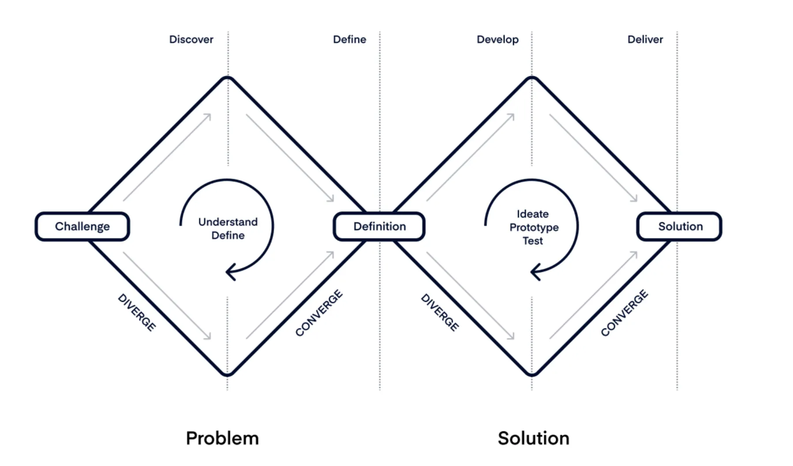
I targeted young professionals — 1+ year of experience, under 35 — working in cross-functional environments. Why this segment: they have enough work experience to have real exposure to workplace dynamics, a high willingness to try new tools as early adopters, easy access for interviews and testing, and the segment is large and scalable across modern tech, agency, and corporate environments.
I ran qualitative interviews to surface assumptions and build testable hypotheses, structured around five job steps — Define + Locate, Prepare + Execute, Monitor, Modify, Conclude — each with its own research questions. I interviewed 8 people from the target segment: an initial 6 to surface early patterns, then 3 follow-ups after refining the questions. Raw notes and recordings stayed confidential per interviewees' requests; only anonymized summaries and synthesized insights are included here.
I converted those insights into a step-by-step job map, with the core job framed as "collaborate effectively in cross-functional projects": Define → Locate → Prepare → Confirm → Execute → Monitor → Modify → Conclude, each step grounded in real actions, problems, and insights pulled directly from the interviews.
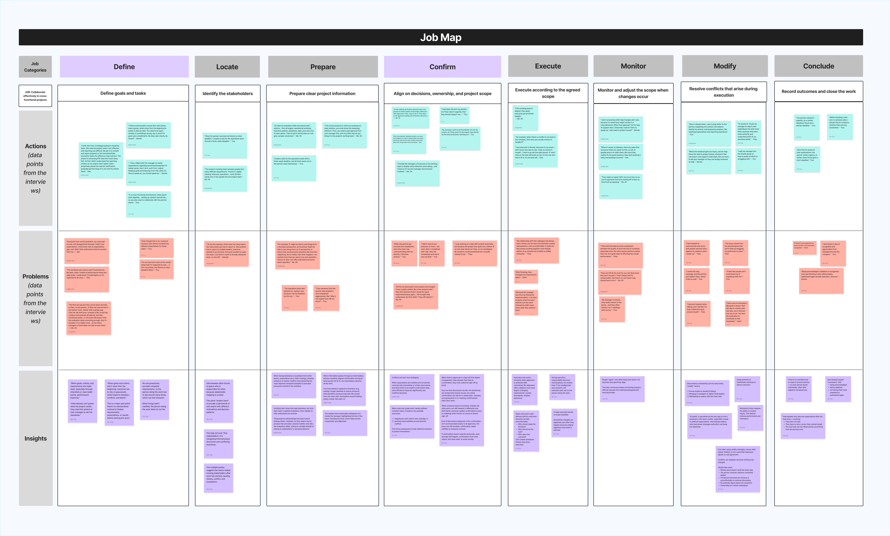
I focused the MVP primarily on the Confirm step — using an outlier case as a deep-dive — while keeping lightweight support for the upstream Define step. Interviews showed that ambiguity at the beginning is the root cause of most downstream problems; Define and Confirm are the "guarding" steps where a team can prevent rework instead of reacting to it, and interviewees had already invented informal workarounds that pointed to unmet needs there.
Zooming into one interviewee's case (Ms. XX) surfaced the root cause directly in her own words: a illusion of consensus caused by colleagues giving the "silent treatment," plus the workaround she'd already invented — a manual "evaluation table" to force a decision, with no mechanism to hold other teams accountable for it.
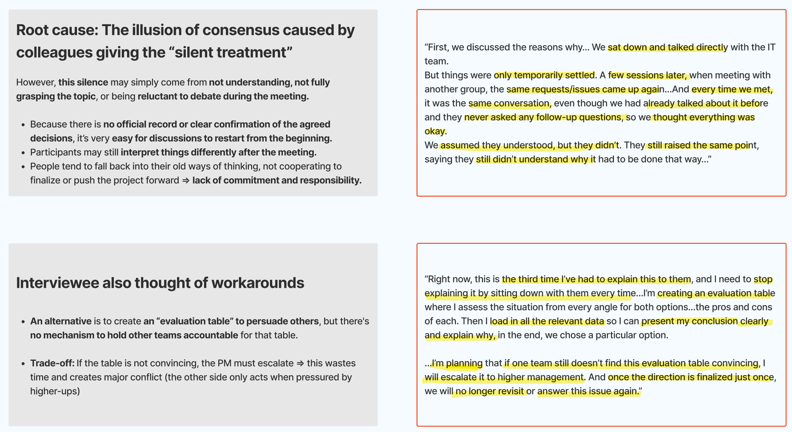
With these implications — an illusion of consensus from silent treatment (Confirm), and no official record of agreed decisions (Define) — I refined the underlying causal assumption: project managers who manage cross-functional contributors struggle to confirm whether alignment has actually been reached, caused by a lack of visible, multi-party sign-off and no confirmation gate. (I don't assume recorded sign-off is the only causal lever — manager engagement, team norms, and the quality of the Define step are other variables; this stayed a testable hypothesis.) That became two JTBDs:
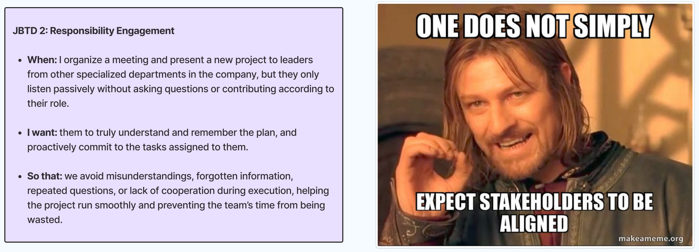
I chose JTBD1 (Decision Approval) since it's the root cause behind JTBD2, drives greater business impact, carries a stronger emotional payoff, is easier to address with concrete solutions like workflow approvals and audit trails, and has a higher chance of success because it relies less on changing human behavior.
PMs managing cross-functional projects struggle to secure clear, auditable approvals from stakeholders in a timely way, making it difficult to avoid misunderstandings and causing delays or uncertainty when trying to finalize a project's decisions. As a job-to-be-done: when I organize a meeting about a new project with leaders from other specialized departments, and it ends with them only listening — without confirmation that they understand, and without any formal approval in writing — I want a clear approval instead of silent listening, or at minimum a specific stated concern if they disagree, so that I don't mistakenly assume the project has been agreed upon and don't have to re-explain or re-handle the same issues multiple times.
With the problem statement and JTBD established, I identified six key needs the solution had to bridge between the goal and the outcome: enable fast decision-making without delays, have documented proof of approval, know immediately if there's an objection or delay, avoid presenting and resolving the same issue repeatedly, and ensure clear accountability across departments.
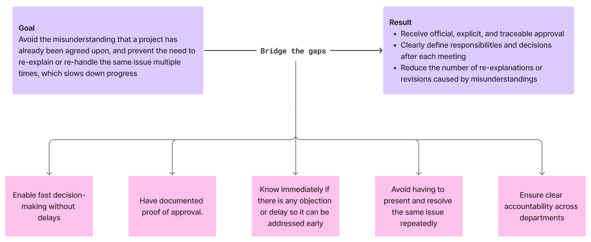
I reviewed three existing tools against that criteria — loqbooq (transparent decision logging, but approvals can stall if key members are unavailable, and it only documents "what" and "why," not deeper analysis), Wrike (full project management, but heavyweight and less specialized for decision logging), and DecisionDesk.io (end-to-end workflows, but a steep learning curve and UI complexity for non-technical users). I concluded the most effective approach was an independent web app that guarantees enforceable approvals, a stable audit trail, and easy tracking.
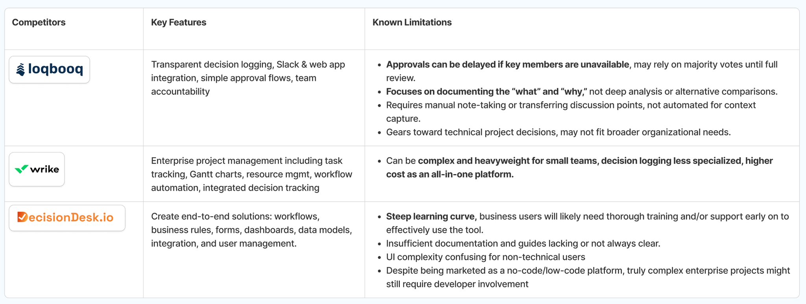
That became Approvy: a SaaS web app for documenting project decisions, helping PMs create meeting notes and obtain clear, timely approvals from stakeholders, reduce delays and repeated explanations, and create a transparent, traceable decision history — with core features like decision logs, a time-bound approval mechanism, automated approval workflow, and a full audit trail.
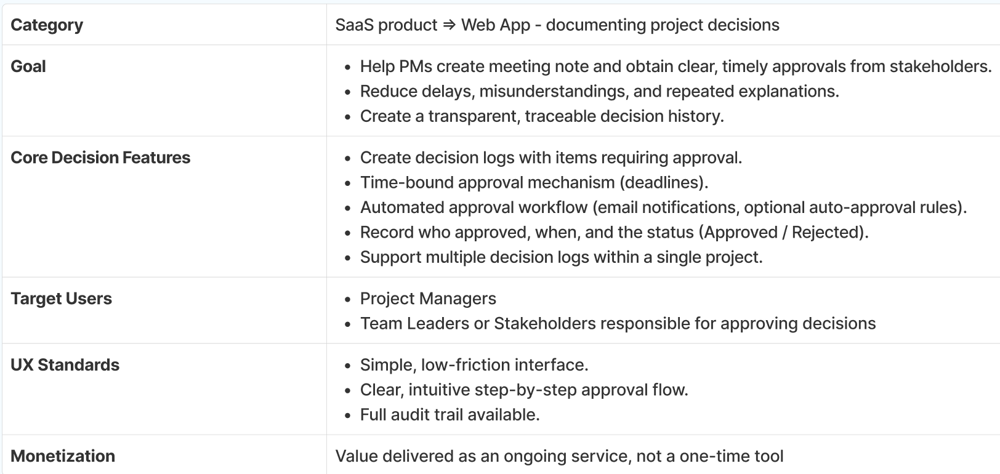
With the concept defined, I mapped the workflow across both roles (Project Manager and Approvers), the database objects, and the object relationship diagram.
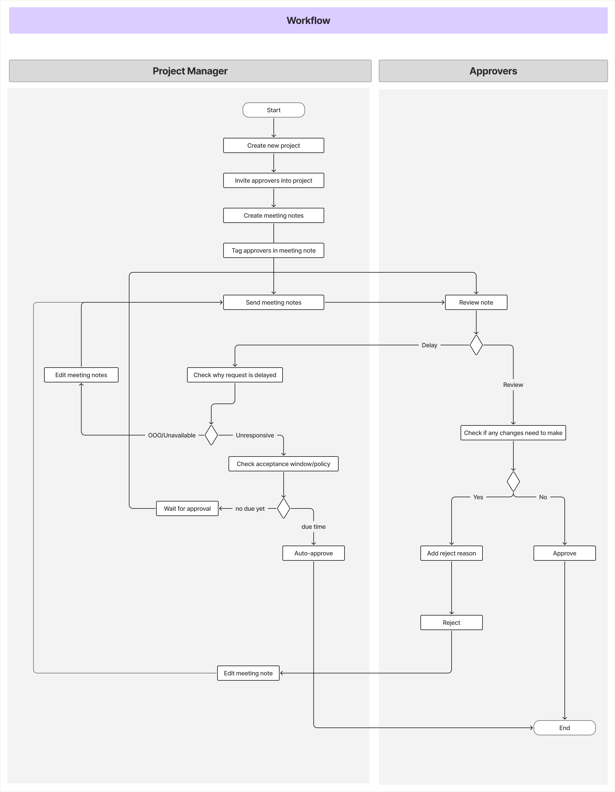
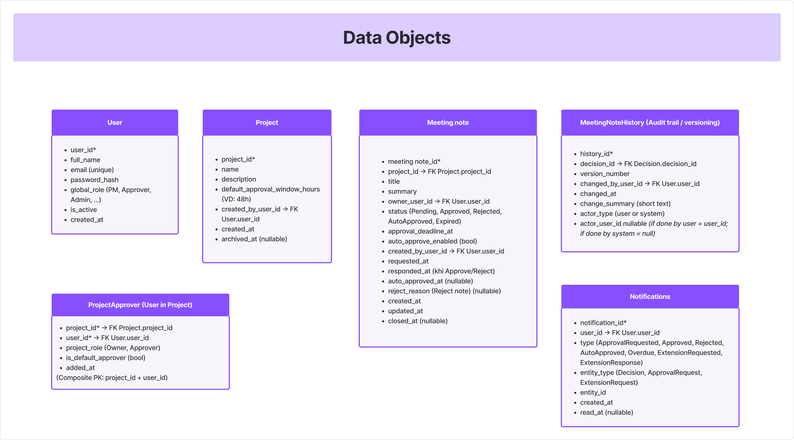
I prioritized user stories with a MoSCoW-style must-have / nice-to-have split across nine flows — signup, project creation, meeting notes, approver assignment, timebound deadlines, review and send, await approval, monitoring, and recording/closing — then built activity diagrams and mockups for both the PM's view and the approver's view.
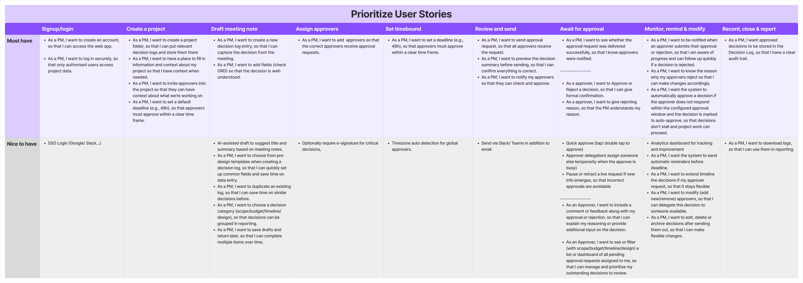
Mockups — PM's view
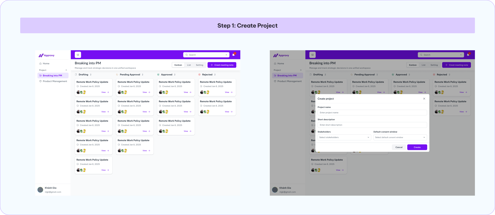
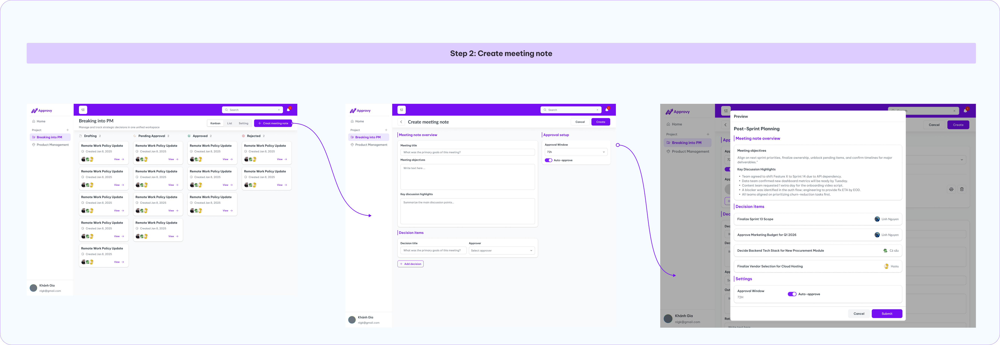
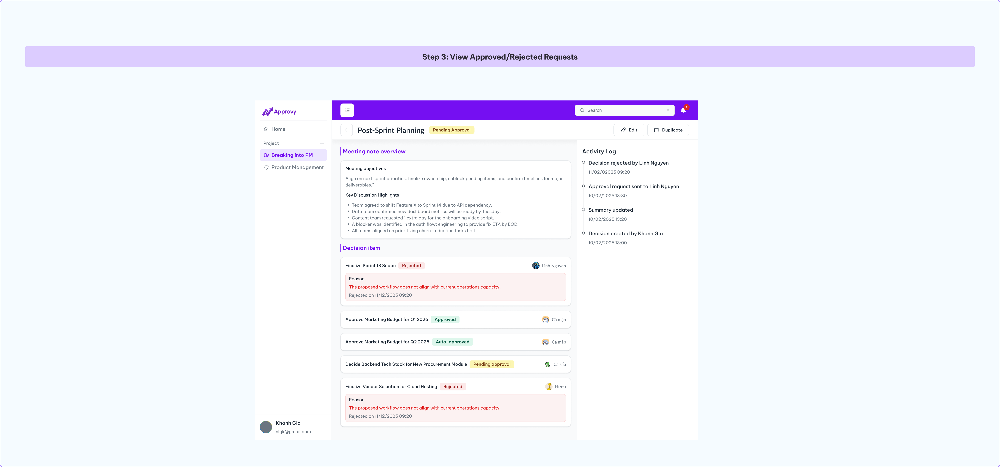
Mockup — Approver's view
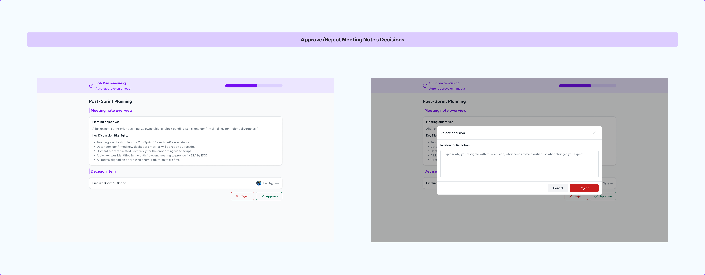
Beyond the MVP: success metrics (documented approval rate, median time to approval, on-time approval rate), a three-phase feature roadmap (MVP → scale & reduce friction → governance & analytics), a pilot launch plan (onboard 3–5 PMs, build onboarding content, targeted outreach), marketing tactics (content, community/partnerships, paid), and a freemium monetization model.
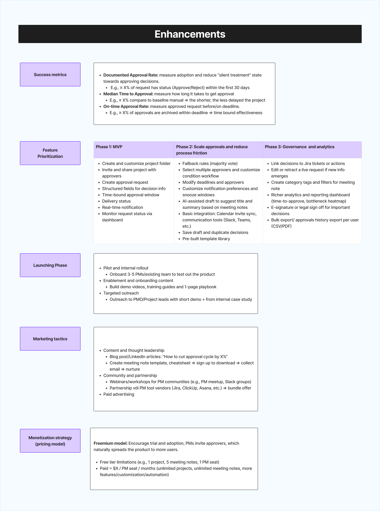
The product I was working on was a platform used by QA engineers and development teams. It was accessible enough to get started, but getting real value from it required technical knowledge and a clear use case — buyers typically needed some skill familiarity before fully committing. At the time, the inbound motion consisted of a two-person sales team: every prospect who wanted to learn more, get a demo, or ask a technical question came through them directly, with a ~48-hour response window. I was on the Growth team, sitting between product and the sales motion to scale the self-service journey (PLG), which let me see where the existing approach could improve.
Before jumping to a solution, I mapped how the existing inbound workflow actually operated — from the moment a prospect landed on the website to the moment a lead was accepted or rejected. The map showed a structural mismatch: once a message landed with the sales rep, the workflow branched into something much heavier. The real cost wasn't any single step; it was that the full sequence repeated for every inbound lead regardless of how likely it was to convert. High-fit prospects waited in the same queue as low-fit ones, and the team had no way to tell the difference until they'd already done the work.
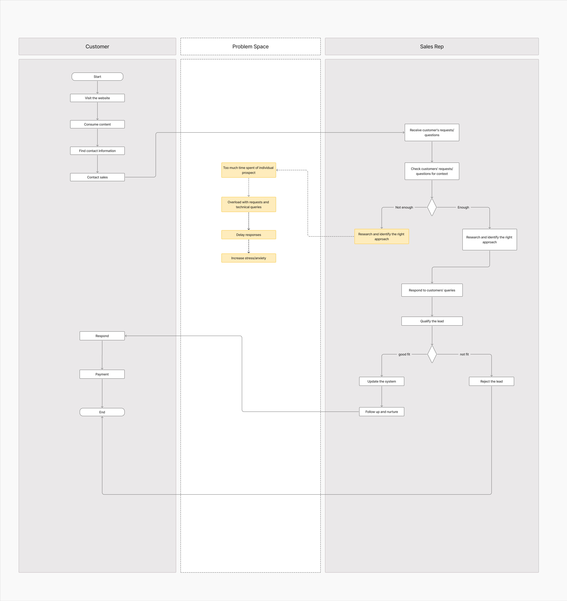
Looking at how the team operated, two gaps stood out. First, an existing demo request form captured contact information — name, email, company, job title, team size, an open text field — but not intent: the rep could see who was asking, but not why, what problem they were solving, or where they were in their buying journey, so every conversation still started from scratch. Second, not every inbound message could realistically become a sales conversation — fit depends on need, budget, timeline, and reaching the right person — but the workflow treated every message the same regardless of how likely it was to convert.
After validating these insights with the sales team, I wrote the job story: when inbound leads contact me, I usually have to manually research each prospect's background, handle a large number of requests across niche and technical use cases, and qualify each lead individually without knowing upfront if they truly intend to buy. I want leads to have already engaged with product resources on their own, and their basic context and intent captured before the first conversation, so that I can immediately focus on high-intent prospects while the rest are handled and nurtured automatically.
That became the problem statement: the two-person inbound team struggled to prioritize and qualify high-intent leads due to the large volume of requests, resulting in slower response times, missed opportunities, and a lower-quality customer experience — for both the external prospects evaluating the product and the internal sales team trying to serve them.
I mapped three possible use cases — lead qualification, self-service FAQ, and handoff to a sales rep — against user value, business value, and strategic impact, and chose to solve lead qualification first because it mapped directly to the team's North Star metric: improving MQL → SQL conversion. The other two use cases supported the same funnel but were secondary outcomes.
I evaluated the realistic build options against the team's constraints using an impact-effort matrix. A chatbot won because it was the only option that solved both problems at once — capturing leads and qualifying them automatically, like an alternative human agent — and the team's existing FreshChat relationship made it a practical choice, since the infrastructure was already partially in place.
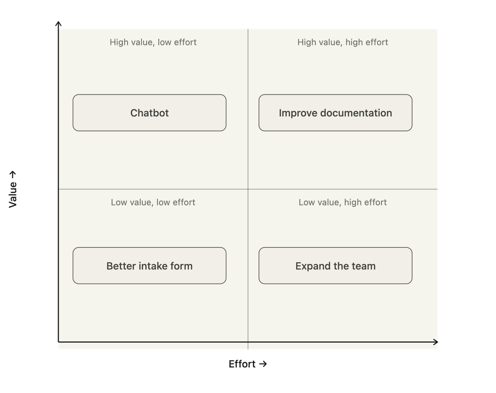
In scope for v1: automated lead qualification via a conversational flow that captures prospect context before the first human touchpoint; a self-service FAQ powered by an integrated knowledge base; enforced qualification fields; conversation logic tailored to user type (trial/free vs. paid); and intelligent routing to hand off qualified leads to a sales rep by predefined rules. Out of scope: automated lead scoring, analytics/bot performance tracking, multi-language support, and mobile optimization — all deprioritized to keep the v1 build tight.
The main technical constraint was having no in-house build resources, so the entire build had to be configured within FreshChat's paid tier rather than evaluated from scratch — which narrowed the options but also accelerated the timeline. Conversation design became the primary performance lever, since no custom NLP or intent modeling was possible within the tool.
Before touching FreshChat, I mapped every step and decision point as an activity diagram, then configured the logic, wrote the content, and set the conditions directly inside the tool. I demoed the build to the sales team to confirm the flow matched their expectations and that they understood what a lead notification would look like on their end, then worked with a web developer to integrate it on the site — debugging a first deployment where the chatbot didn't appear at all — before setting up the notification trigger so the sales team got notified immediately when a prospect submitted their information.
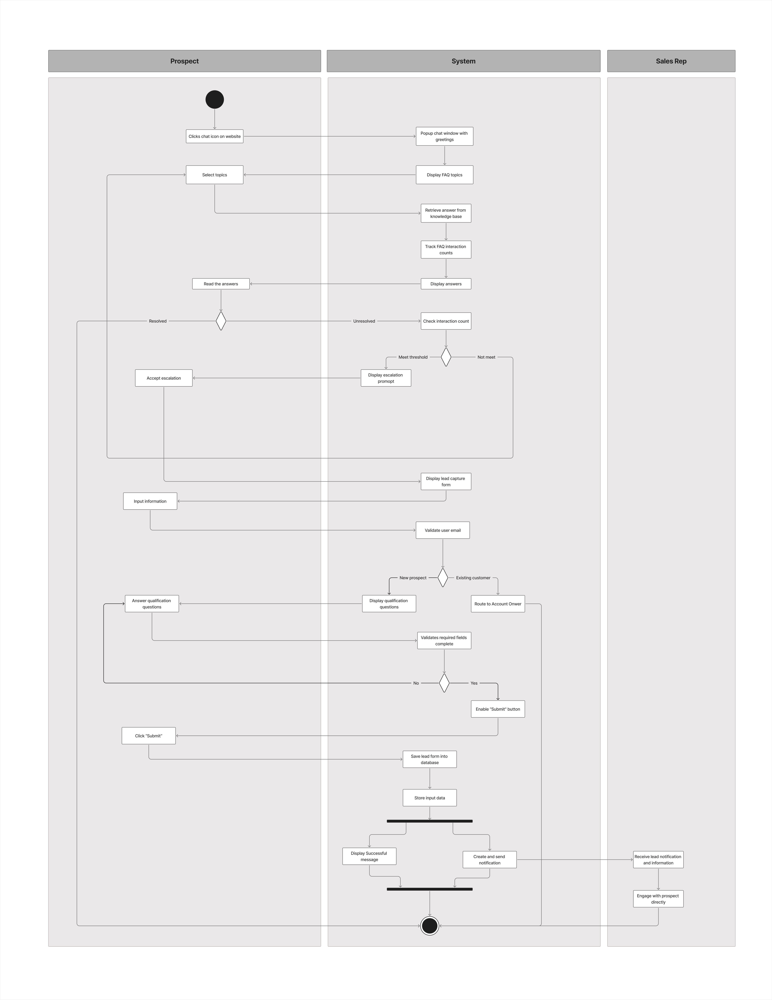
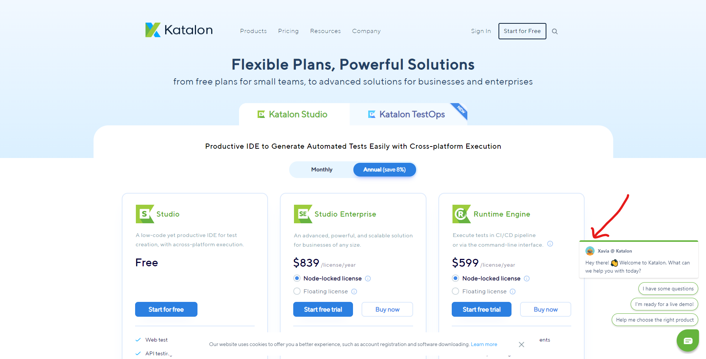
The chatbot became the primary intake point for inbound interest, handling conversations that previously landed directly in the sales team's inbox. Within the first quarter post-launch it generated 670 leads and over 5,000 conversations; of those leads, 320 converted to MQLs — a 48% lead-to-MQL conversion rate — with 176 ultimately qualifying as SALs. Beyond the numbers, FAQ responses went from a 48-hour wait to instant, and the sales team stopped fielding basic product questions and started focusing on conversations that were actually worth having.
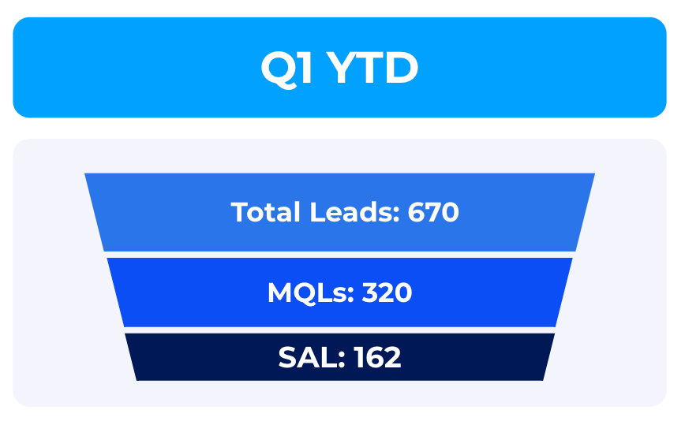
The chatbot worked, but looking back, the biggest limitation wasn't the flow or the conversion numbers — it was maintenance. Every time the product changed, the conversation content had to be manually updated across the entire flow, which created an ongoing dependency on someone to keep the agent accurate — not sustainable long-term. If I were starting this today, I'd explore whether a lightweight AI-powered workflow could replace the rigid rule-based structure, so content updates wouldn't require manual adjustment every time.
A personal finance app built end-to-end — budgets, transactions, and goal tracking in one place — meant to help someone actually hit a financial goal instead of losing track of it in a spreadsheet.
Try the live demo →